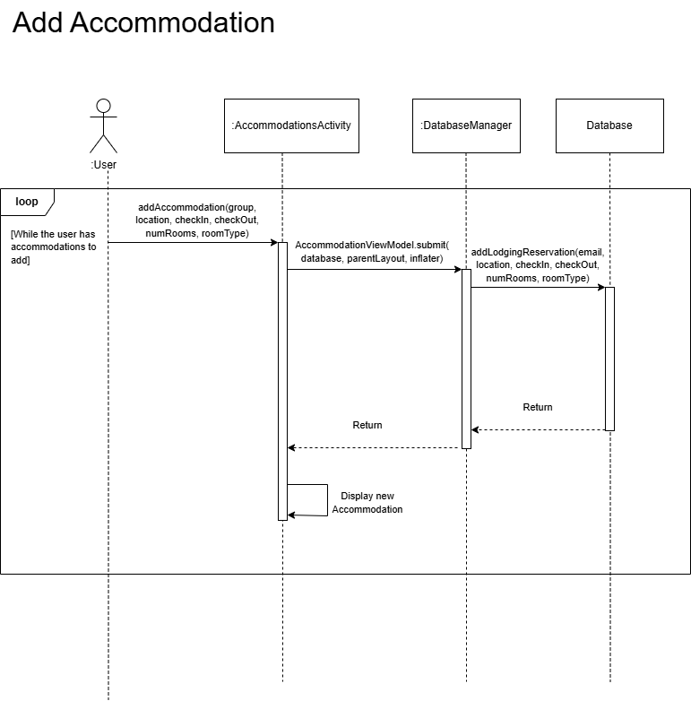
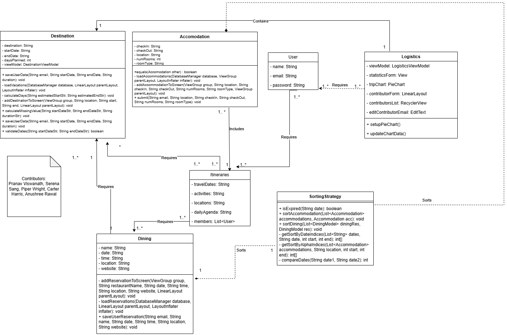

WanderSync: A Collaborative Travel Management System
CS 2340 - Group 31
Introduction
WanderSync is a collaborative travel management system designed to make travel planning easier and more collaborative for all. This project aims to solve the problem of uniting complex information spanning multiple itineraries, reducing trip confusion, and making the trip planning process more productive and enjoyable.
Design & Architecture
WanderSync's architecture is built on a robust foundation of well-established design patterns and GRASP principles. Our sequence diagram illustrates the typical user workflow for adding accommodations, demonstrating how we've implemented a loop-based system that allows users to seamlessly add multiple accommodations while maintaining data consistency through our DatabaseManager.

Figure 1: Sequence Diagram showing the Add Accommodation workflow
The system's core functionality is distributed across several key classes, as shown in our Design Class Diagram. The User class serves as the central entity, connected to Itineraries, Accommodations, and Logistics. Each Destination contains essential attributes like travel dates, activities, and daily agendas, while the Logistics class handles trip statistics and contributor management.

Figure 2: Design Class Diagram showing the system architecture
User Interface (UI)
Take a visual tour through WanderSync's intuitive interface, showcasing our key features and user workflow:

Welcome: A clean and inviting splash landing screen featuring our WanderSync logo and simple Start/Exit options.

Login: Secure authentication system integrated with Firebase Database, allowing users to log in or create a new account with real-time verification.

Logistics: Interactive dashboard featuring MPAndroidChart-powered pie charts for trip statistics visualization and collaborative features including user invitation system.

Log Travel: Simple and intuitive interface for adding new destinations to your travel itinerary, complete with start and end date selection.

Calculate Vacation Time: Built-in calculator tool that helps you track and manage your total planned vacation days across all destinations.

Dining Reservations: Streamlined reservation system for planning and managing your dining experiences throughout your journey.

Dining Establishments: Comprehensive dining management system displaying restaurant details including name, date, time, location, and website information for each reservation.

Accommodations: Streamlined booking interface with integrated calendar system for selecting dates and inputting accommodation details like room type and location.

Travel Community: Centralized platform for collaborative travel planning, allowing users to create and share comprehensive travel plans including destinations, dates, accommodations, and transportation details.
Functionality
Video Link
Conclusions and Reflections/Learning
For most of our group, this project represented our first comprehensive fullstack development experience. The learning curve throughout the semester was steep but rewarding, encompassing multiple aspects of modern software development:
Technical Skills Acquired
- Android Studio interface and Java programming
- Software design patterns (SOLID/GRASP principles, Singleton/Factory patterns)
- Agile methodology and sprint-based development
- Version control with Git and GitHub
- Firebase integration
- SonarQube implementation
Challenges and Growth
We encountered various challenges throughout the development process. Group organization required careful coordination of sprint contributions and effective communication between team members. The technical stack presented its own hurdles, as mobile app development was a new concept for many of us. Incorporating software engineering best practices and design principles added an extra layer of complexity to our learning journey.
Despite these challenges, seeing our fully deployed application come to life has been extremely rewarding. This experience has not only enhanced our technical capabilities but also taught us valuable lessons in user-centered design and collaborative development. We are proud of our achievements and grateful for the comprehensive learning experience this project has provided.
Contributors
The following team members contributed to both the WanderSync app development and website deployment:
- Pranav Viswanath
- Serena Sang
- Piper Wright
- Carter Harris
- Anushree Rawal